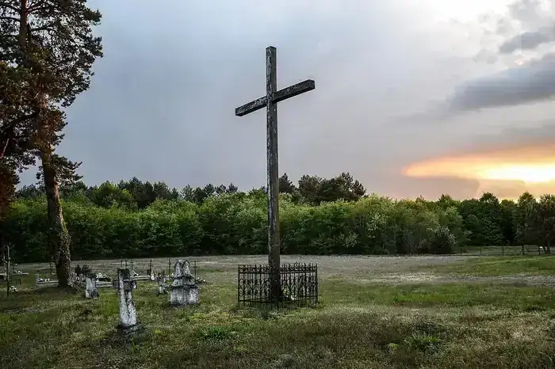

The theory
Terror management theory, developed by Jeff Greenberg, Tom Pyszczynski and Sheldon Solomon from 1986, draws on Becker and on cultural anthropology: awareness of inevitable death creates existential terror, which is managed by commitment to a cultural worldview and by self-esteem. The experimental manipulation is 'mortality salience' — writing about one's own death.
Maps, diagrams and images



The evidence
Hundreds of studies reported that mortality salience increases worldview defence, in-group favouritism and punishment of norm violators. Then came the replication crisis: several large pre-registered replications found much smaller effects or none, and a 2023 multi-lab effort reported effects that were inconsistent across measures.
The theory's defenders argue that the replications tested a narrow version and that the broader framework stands.
Documented: the theory, and the original body of studies.
Contested: whether the effect replicates at the reported size.
Contested: the causal role of death awareness.
Unsettled: the current status after replication failures.
The honest label: live debate.
Why it is in the archive
Because it is the clearest case of a large, influential research programme meeting the replication crisis head-on.
Open resources on this topic
- BookTerror Management Theory: Relationships and Career Aspirations in University Women — Major, Rochelle J. · 2007 (Internet Archive, free to read)
- BookThe Beast That Wanted Wings: An Experimental Investigation of Terror Management Theory — Morris, Susan · 1992 (Internet Archive, free to read)
- BookImproving the U. S. Military's Adaptability Against the Salafist-Jihadi Threat - Counterterrorism and COIN, De — ['U. S. Military', 'Department of Defense (DoD)', 'U. S. Gov · 2017 (Internet Archive, free to read)
- PapersOpen-access articles: DOAJ · PubMed Central · Internet Archive Scholar
- BooksPublic-domain and borrowable copies: Open Library · Project Gutenberg · Google Books
Cite this page
Momin, S. (2026). Terror Management Theory. The Larger World Archive. https://drsamonline.github.io/LARGE_GLOBE/terror-management.htmlMomin, Sohil. “Terror Management Theory.” The Larger World Archive, 2026, https://drsamonline.github.io/LARGE_GLOBE/terror-management.html.Momin, Sohil. “Terror Management Theory.” The Larger World Archive, 2026. https://drsamonline.github.io/LARGE_GLOBE/terror-management.html.@misc{terror2026terror,
author = {Momin, Sohil},
title = {Terror Management Theory},
year = {2026},
howpublished = {The Larger World Archive},
url = {https://drsamonline.github.io/LARGE_GLOBE/terror-management.html},
note = {Last reviewed 20 November 2026}
}Last reviewed 20 November 2026 · Corrections policy · this page is not peer reviewed
Sources for this page
- Wikipedia, “Terror management theory” — the theory and the evidenceen.wikipedia.org
- Wikipedia, “Mortality salience” — the manipulationen.wikipedia.org
- Wikipedia, “Replication crisis” — the contexten.wikipedia.org
- Wikipedia, “Ernest Becker” — the intellectual sourceen.wikipedia.org